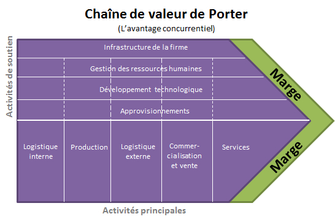

Outil d’analyse transversal
Chaîne de valeur de Porter
Une manière de représenter et organiser les activités d’une organisation selon leur rôle dans la création de valeur.
1. Voir le modèle

À retenir : les briques du schéma changent selon l’organisation étudiée. Porter fournit une structure de représentation, pas un organigramme à recopier.
2. Comprendre ce que l’on classe
Commencez par l’organisation réelle : qu’est-ce que le client vient acheter ? Puis repérez les activités qui permettent de créer, délivrer et maintenir cette valeur.
Activités principales
Elles participent directement à la proposition de valeur achetée par le client.
Activités de soutien
Elles fournissent aux activités principales les ressources, les moyens et les conditions nécessaires à leur fonctionnement.
Attention : on ne classe pas une activité d’après son nom. Une activité « RH », « informatique » ou « logistique » peut être principale dans une organisation et de soutien dans une autre.
3. Construire la chaîne de valeur de l’entreprise étudiée
- Identifier la proposition de valeur. Écrivez en une phrase ce que le client achète réellement.
- Repérer les activités réelles. Partez des pièces, observations et informations du dossier ; n’inventez pas une activité absente.
- Classer selon le rôle. Activité principale si elle contribue directement à la valeur proposée ; activité de soutien si elle permet aux principales de fonctionner.
- Organiser la représentation. Adaptez, renommez ou regroupez les briques du modèle pour qu’elles correspondent à l’organisation réelle.
4. Un contre-exemple utile : une entreprise de solutions RH
Principales
- analyser le besoin RH du client ;
- rechercher et sélectionner des candidats ;
- évaluer et recommander ;
- accompagner le client.
Soutien
- recruter les propres salariés du cabinet ;
- gérer leur paie et leurs congés ;
- former les consultants ;
- administrer les outils internes.
Dans les deux colonnes, on parle de ressources humaines. C’est le rôle dans la proposition de valeur qui change le classement.
5. Utiliser la représentation dans le TP
Une fois la chaîne construite, passez activité par activité : de quoi dépend-elle ? Que se passerait-il si elle fonctionnait mal ou s’arrêtait ? Quelle preuve du dossier permet de l’affirmer ?
Vérifier la représentation
- La proposition de valeur est formulée avant le classement.
- Les activités viennent de l’organisation étudiée, pas d’une liste recopiée.
- Le classement principale / soutien est justifié par le rôle de l’activité.
- Une information absente est signalée comme « à vérifier » plutôt qu’inventée.
Référentiel, sources et approfondissement
Cette ressource est un outil transversal. Elle peut préparer l’analyse des risques et des processus sans remplacer les méthodes spécifiques de gestion des risques.
Pour une représentation libre de référence : Wikimedia Commons, « Porter Chaine de valeur.jpg », domaine public par son auteur Milanku.